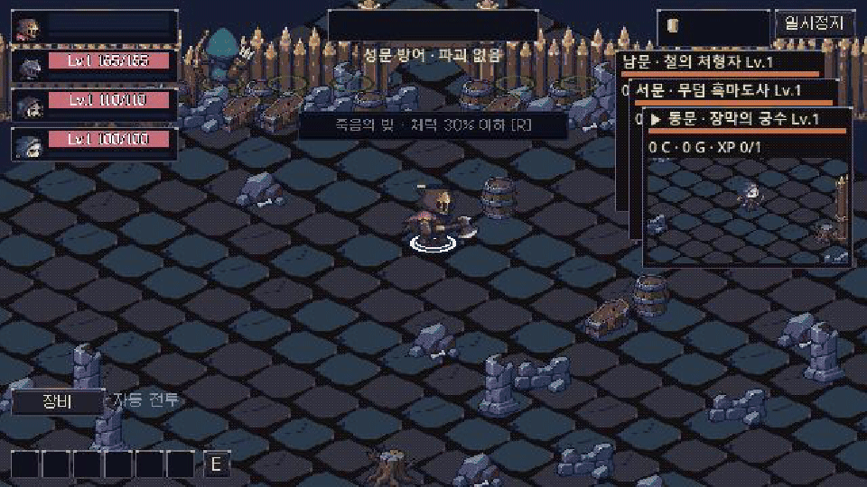

Tracefolio REPORTS & ISSUES
Tracefolio REPORTS & ISSUES 캠프 가디언작업 결과
캠프 가디언작업 결과자동 전투 위기 개입 죽음의 빚 구현 및 기능 QA
검증 대기체력 30% 이하 대장의 1회 계약, 12초 치명 피해 방지와 피해 증가, 추심자 및 상환/미상환 정산을 구현하고 기능 QA 21항목을 통과했습니다.
작업 결과
기획·구현·저장·Godot 기능 QA·실제 OpenGL 렌더 확인 완료. 전용 신규 아트·체감 난이도·게임 빌드/배포는 미확인입니다.
변경 내용
적용 내용
출정당 팀 전체 1회, 체력 30% 이하인 선택 대장이 R/버튼으로 수동 발동합니다. 12초간 HP 1 보장과 가하는 피해 +50%, 방지한 피해에 따라 추심자 체력이 증가합니다. 처치 시 계약 대장에게 80 C와 생존 시 최대 체력 35% 회복, 미상환 출정 종료 시 해당 대장 출정 코인 50% 올림 차감 후 기존 정산입니다. 영구 금고/장비를 직접 차감하지 않습니다. 대장 전환에도 대상이 유지되고 AI는 발동하지 않습니다. 기존 해골 외형과 기존 효과음을 공유합니다. docs/death-debt.md에 설계/수치/마을 방어 판단을 저장했습니다. 마을 방어는 제거하지 않았습니다. 기존 지침으로 처리하여 지침 변경 없음.
검증
Godot 4.7.2 --headless --script tools/qa_death_debt.gd: 21항목 통과, failures=0, 종료코드0. 체력 조건/모달/일시정지/중복 발동/회피 피해 제외/실제 치명 DOT/피해 배율/타 대장 제외/포커스 변경/시계 정지/이동 가능 추심자 생성/체력 상한/효과 종료/실제 처치 경로/중복 보상/회복/재사용 불가/미상환 1회 정산/결과 문구/데이터 참조를 확인했습니다. 실제 GTX 970 OpenGL 렌더 156프레임(5.2초), state=paid를 확인했고 이미지에서 버튼·추심자 이름·체력을 대조했습니다. 영상은 QA에서 종료 시점을 앞당긴 시연이며 실제 12초 길이 재현이 아닙니다. 
남은 사항
장기 자동 전투 체감/사용자 청감/전용 추심자 아트 미확인. 실제 렌더 종료 시 기존 텍스처 RID 3개 해제 경고와 사용자 캐시 폴더 생성 경고가 발생했습니다. 게임 빌드·게임 소스 푸시·게임 배포 미실행. 중앙 보고 푸시/배포/외부 HTTPS 접근은 별도 확인합니다. 마을 방어는 성문 파괴가 없고 4대장 전환/미니 렌더/부활과 결합되어 있어 통째 삭제 대신 방어 행군·명칭을 분리하는 후속 방향을 제안했습니다.
작업 시간
- 제안 시간: 약 10분. 시작 2026-11-18 01:01:37 KST.
- 실제로 완료된 시간: 구현·최종 기능 QA 완료 2026-11-18 01:08:11 KST, 실측 6분34초. 중앙 등록 시간은 별도입니다.
- XERJ: 미사용 — 로컬 소스·데이터·실제 Godot 실행 결과로 확인했습니다.